The Corner
Golden hour,
on the corner
Stone, glass and warm light. You'll spot the glow from halfway down the street.
cahā
The Coffee Club
Brewing
The Coffee Club
Espresso, fresh bakes and an all-day kitchen across two warm floors and an open-air terrace. Scroll to walk in.
The Corner
Stone, glass and warm light. You'll spot the glow from halfway down the street.
The Steps
Lantern-lit steps, olive trees and a warm timber canopy. The street goes quiet as you climb.
The Sign
Our name, backlit on limestone. You're in the right place.
The Threshold
Woven pendants behind wide glass doors, marble steps under the sign. The noise drops away as you step up.
Step Inside
Fresh grinds, warm milk and something just out of the oven. Welcome to cahā.
Chapter II · The Bar
Where every cup begins
The Room
Oak tables, woven pendants and soft arches. Seats for a quick espresso or a slow afternoon.
The Counter
A dark marble bar, a glowing menu board and a grinder that barely gets a break.
The Case
Croissants, brownies and cakes, restocked right through the day.
The Pour
Silky milk, a steady wrist and a rosetta on top. Every cup is poured to order.
Fresh Today
A few favourites from the bar and the kitchen, made here from morning to close.
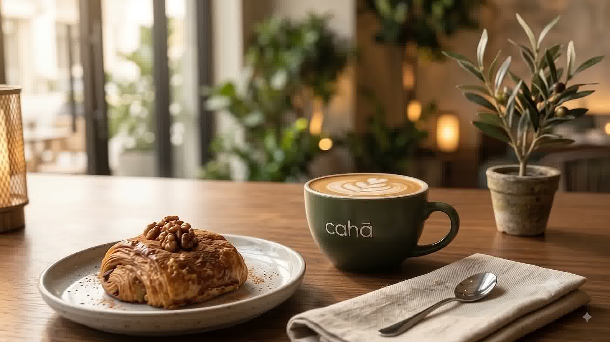
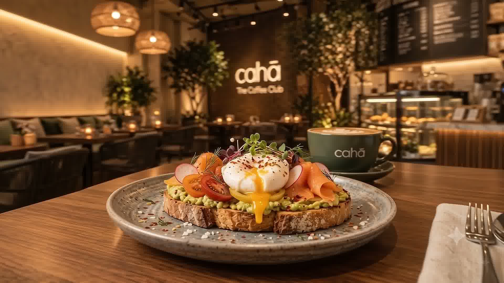
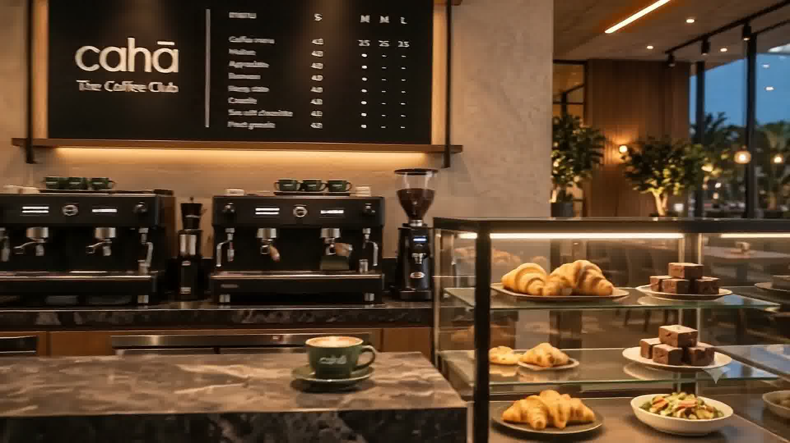
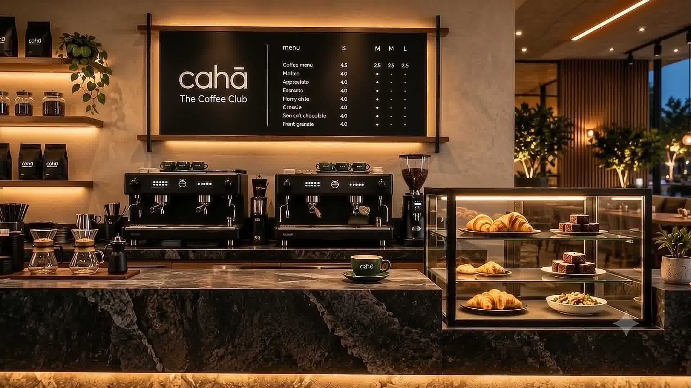
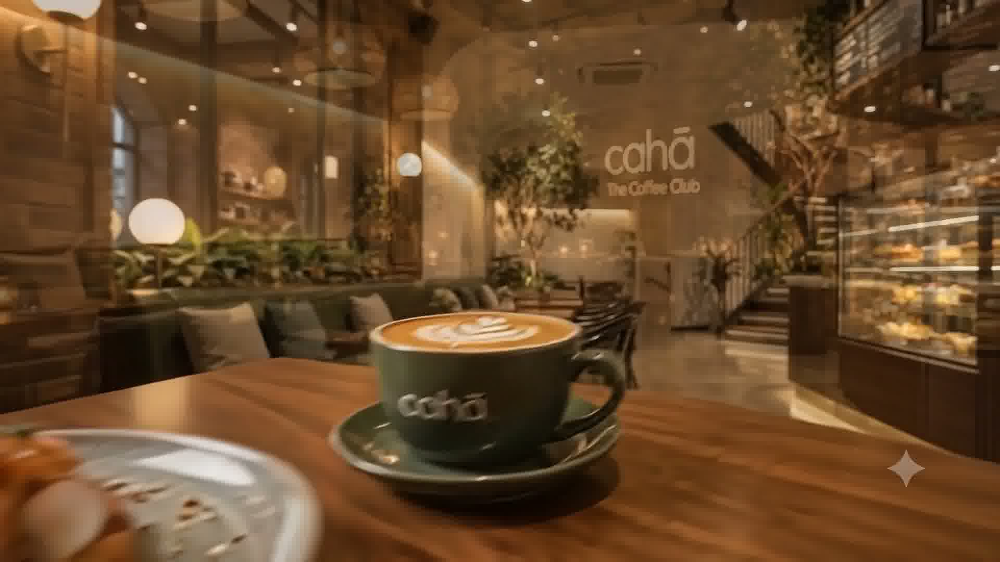
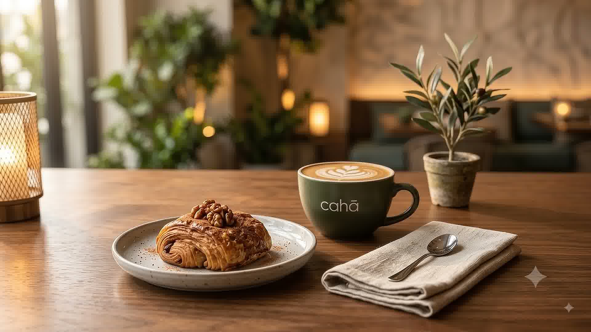
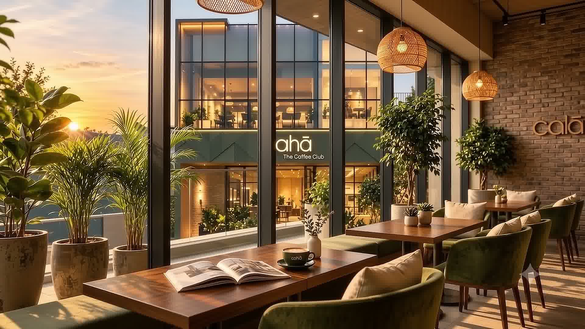
Chapter III · The Table
Something to go with it
Morning
Laminated, glazed and best eaten warm. Our pastries come out of the oven every morning.
Brunch
Poached eggs, smoked salmon and toasted sourdough. Breakfast doesn't stop at eleven here.
Stay a While
Big glass, low sun and nobody rushing you out. Stay for one cup, or three.
The Space
Limestone, oak, rattan and brass. A room that looks as warm as the coffee tastes.
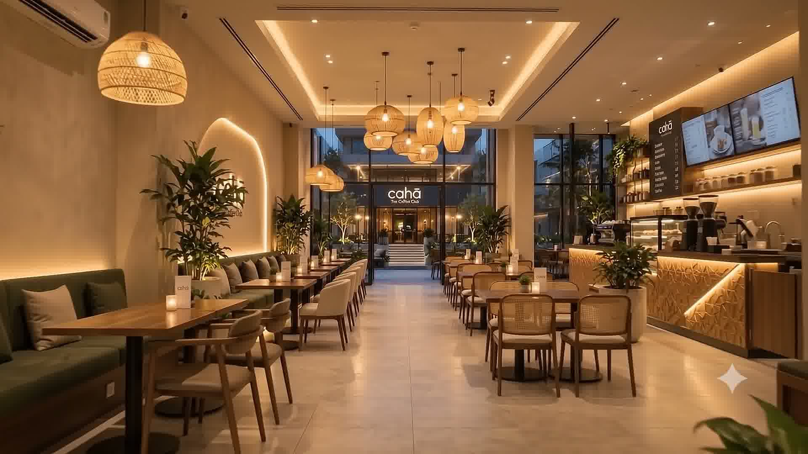
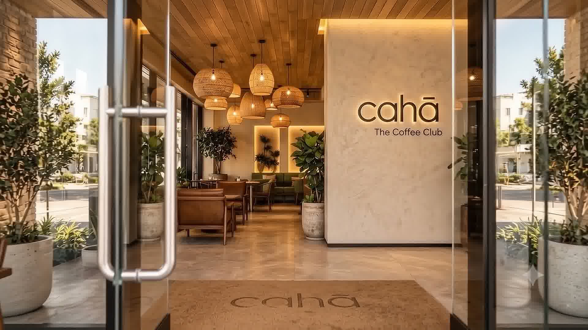
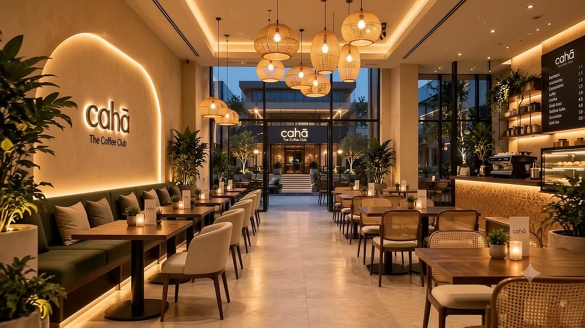
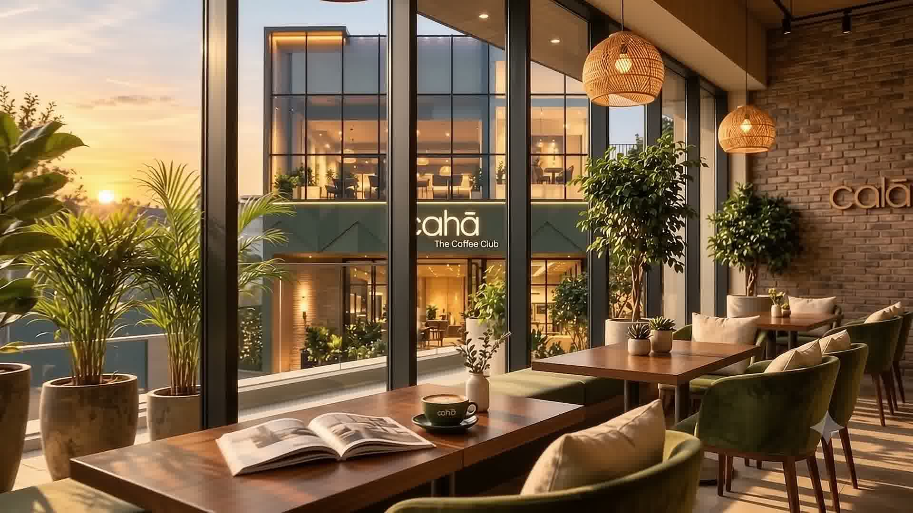
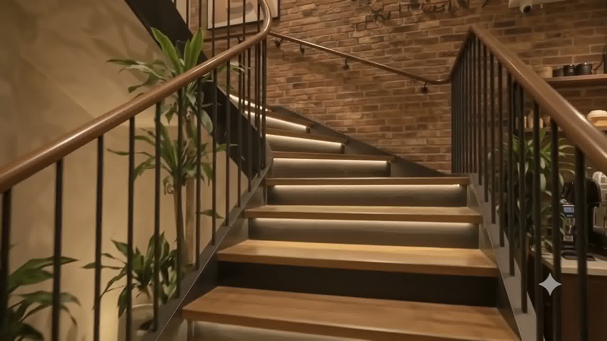
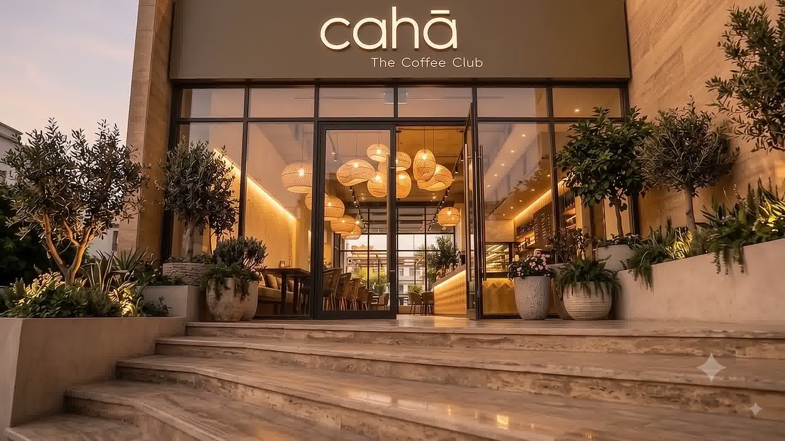
Chapter IV · Upstairs
The quieter floor
The Stair
Past the cake case, a brick-lined stair climbs to the first floor.
The Lounge
Soft seats, low tables and a view over the rooftops. Made for long talks, laptops and doing nothing at all.
Why cahā
cahā started with a simple idea: a place that takes coffee seriously and people warmly. Drop in for a quick espresso at the bar or claim a window seat for the afternoon. Either way, you're a member here.
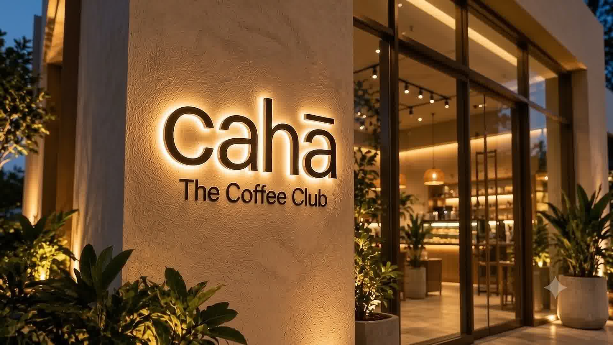
Chapter V · After Dark
The lights stay on
The Terrace
As the sky turns, the open-air deck fills up and the green neon flickers on.
Nightfall
Long after the morning rush, the windows stay warm. See you tomorrow.
Open every day
Early till late
Brunch served all day
Ground-floor café & bar
First-floor lounge
Open-air terrace
Walk-ins always welcome.
Book ahead for groups of six or more, and for terrace tables at sunset.
Order at the bar, takeaway any time, and laptops are welcome upstairs.
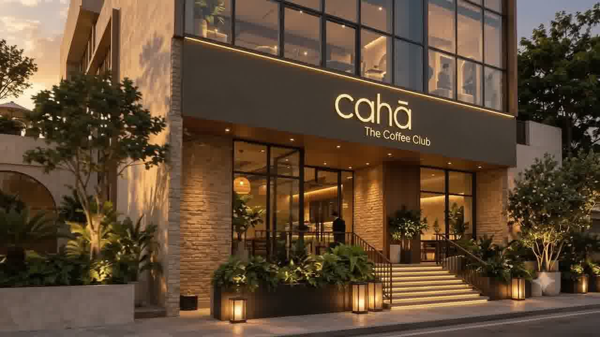
Save a Seat
A seat by the window, a corner of the lounge, or a table on the terrace at sunset.
Book Now